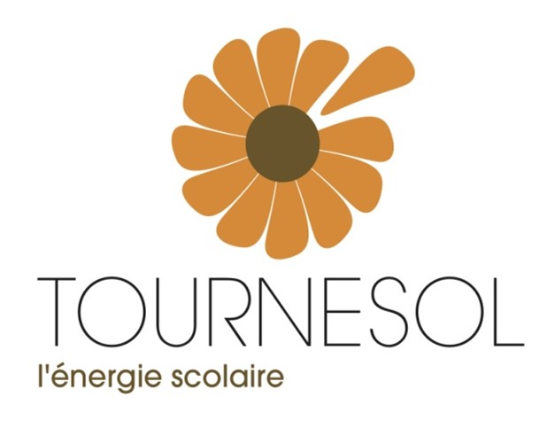

Le BTS CPI du lycée Léonard de Vinci :
La sections des B.T.S. C.P.I. (Conception de Produits Industriels) du Lycée Léonard de Vinci à Melun (77) ont imaginé, conçu et réaliser le véhicule nommé AUGUSTINE qu'ils améliorent au gré des années.

C'est un véhicule qui a été spécifiquement pensé et réalisé pour participer au challenge Shell Eco-marathon. En participant à cette course, l'équipe enseignante souhaite mobiliser les étudiants autour d’un projet technique et novateur pour favoriser l’économie d’énergie et la protection de l’environnement.
Un véhicule & une synergie :
Notre véhicule Augustine a des objectif qui vont au-delà de la pure technique et est un prétexte assumé pour atteindre d'autres objectifs : - L'aspect pédagogique : Le projet Augustine offre une occasion unique à nos étuidant de s'exercer des TP non-virtuels, surtout lorsqu’ils utilisent des matériels innovants et concrets. La réussite des élèves par cette dynamique fait le bonheur des professeurs ! - L’aventure humaine : En effet, les recherches, le travail en équipe, les confrontations, les déceptions, les succès font réagir les étudiants les plus introvertis… - Pour l’approche de la complexité industrielle : Le contexte de travail entraîne des recherches, enrichissantes, tout azimut, entraînant une démarche systémique induite qui complète des programmes plus partitionnés.
Pourquoi le nom d'Augustine ?
Le nom Augustine a été trouvé pour rendre hommage à Augustin Mouchot, un célèbre inventeur qui a son époque a inventé le four solaire. De surcroit ce fût également un professeur qui au début du siècle a été très moteur dans la réalisation de son projet.

En savoir plus sur Monsieur Augustin Mouchot, un petit tour sur Wikipédia : Article Wikipédia Augustin Mouchot
Rouler avec une énergie propre :
Nous avons adopté l'énergie électrique pour propulser notre véhicule Augustine !

L'association Tournesol :
Afin de rendre le projet plus interactif, les enseignants ont mis en place une convention inter-lycées et une Association TOURNESOL. Ces initiatives ont pour objectif de mutualiser les moyens numériques et connaissances de chacun des étudiants. L’éco mobilité est toujours un secteur porteur. L’impact environnemental est toujours aussi important. Il nous a paru judicieux de nous retrouver autour de notre association (TOURNESOL) et de nos lycées respectifs pour se mobiliser tous les ans.

Nous contacter :
- Contacter l'association :
- Contacter l'établissement :
- Adresse postale :
Lycée Léonard de Vinci,
2 bis rue Edouard Branly
77000 MELUN CEDEX - Site de l'établissement : Site du lycée
- Adresse postale :